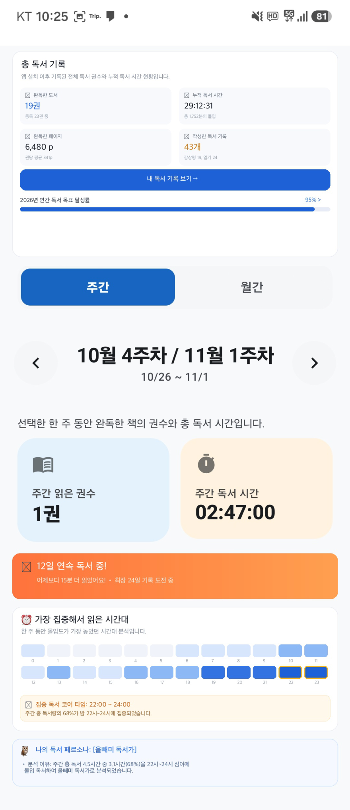
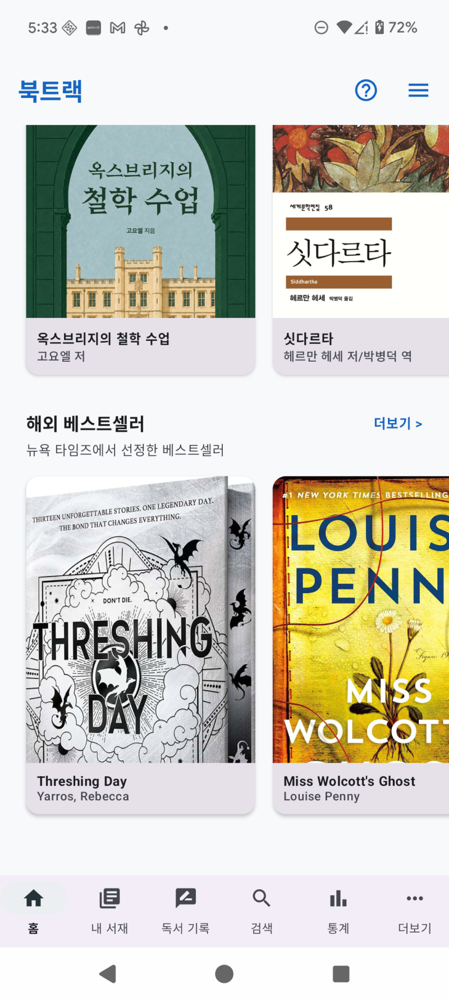

책을 읽는 시간부터 기록하고, 나만의 독서 성향을 발견하는 순간까지 독서의 모든 과정을 함께합니다. 원목 책장, 정밀 타이머, 독서 페르소나, OCR 카드 조색, 월간 인포그래픽 리포트를 지금 경험해 보세요.
"실제 원목 서가에 꽂아둔 듯 실감 나는 책장 감상과 집중을 극대화하는 시간 측정"
실제 원목 책장에 꽂아둔 듯 실감 나는 2줄 서가 배치와 부드러운 연속 스크롤로 소장한 도서들을 감상할 수 있습니다. 읽는 중 / 완독 / 읽을 예정 상태별 필터링과 커스텀 책장(폴더) 분류를 완벽히 지원합니다.
카메라 스캔 한 번으로 도서 정보, 고화질 표지, 장르 메타데이터를 즉시 등록합니다. 예전에 읽었던 책도 읽은 기간, 독서 시간, 평점을 입력하여 손쉽게 서재에 보관하고 통계에 반영할 수 있습니다.
자유로운 독서 시간 측정은 물론, 목표 시간 완독을 돕는 카운트다운 타이머를 제공합니다. 백그라운드에서도 시간 측정이 안전하게 유지되며, 세션 종료 시 읽은 페이지와 감정 태그가 함께 기록됩니다.
권수와 독서 시간 목표를 설정하고, 실시간 달성률 게이지를 통해 꾸준하고 흔들림 없는 독서 습관을 만듭니다.
"00시부터 23시까지, 내가 가장 집중하는 황금 시간대와 독서 캐릭터를 진단하다"
00시부터 23시까지 24개의 시간대 블록 히트맵으로 하루 중 언제 주로 책을 읽는지 한눈에 시각화합니다. 가장 집중도가 높은 시간대를 골드 하이라이트 요약 배너로 분석해 드립니다.
독서 시간대, 속도, 완독 패턴을 정밀 분석하여 나만의 독서 캐릭터(새벽형 탐독가, 심야의 사색가, 주말 몰입형 여행자, 다독가, 병렬 독서가 등)와 데이터 기반의 상세한 분석 이유를 제시합니다.
매일 책을 읽는 습관을 기를 수 있도록 연속 독서 일수를 알려주는 불꽃 스트릭 배너와 3일 달성, 7일 달성, 14일 도전, 30일 마스터 뱃지를 제공합니다.

"작성하는 빈도와 글의 길이, 감정 태그에서 피어나는 나만의 독서 기록 아이덴티티"
작성 빈도, 글의 길이, 선택한 감정 태그의 분포를 종합 분석하여 나만의 독서 기록 캐릭터를 도출합니다. 깊이 있는 서평가인지, 짧고 강렬한 인용구 수집가인지 나의 기록 성향을 명확히 확인하세요.
독서 캘린더와 일일/누적 기록 현황 배너, 감상평·다이어리 통합 카운트로 나의 모든 독서 기록 여정을 한곳에서 유기적으로 모아보고 관리할 수 있습니다.
"소장한 도서와 읽은 패턴을 정밀 분석해 발견하는 다음 인생 책"
내 서재에 등록된 도서 목록과 독서 통계를 바탕으로, 나의 독서 취향에 꼭 맞는 도서를 분석하여 높은 정확도로 추천해 드립니다.
서재에 책이 쌓여갈수록 알고리즘이 더 정교해집니다. 서재 규모에 맞추어 풍성하고 깊이 있는 맞춤 추천 큐레이션 리스트를 제공합니다.

"카메라 On-Device OCR 문장 추출부터 12종 감성 폰트, 종이 질감 카드 조색까지"
책 속 인상 깊은 구절을 카메라로 촬영하면 온디바이스 AI가 문장을 자동으로 인식하여 텍스트로 빠르게 추출해 줍니다.
책을 읽고 떠오른 생각 메모와 본문 사진 첨부, 12가지 감성 폰트와 파스텔 테마로 하루하루 데일리 독서 일기를 감각적으로 작성할 수 있습니다.
배경, 카드 상자, 폰트, 감정 태그, 별점, 워터마크 등 세부 요소의 색상 조색, 8방향 선형 그라데이션, 아날로그 종이 질감 텍스처를 지원하여 소장용 및 SNS 전시용 독서 카드로 제작할 수 있습니다.
"한 달 동안 완독한 책들이 감성적인 실물 책등으로 꽂히는 비주얼 결산 리포트"
한 달 동안 완독한 책들이 실제 책등 모양으로 서가에 나란히 꽂히는 감성적인 비주얼 결산 리포트를 제공합니다. 완독의 성취를 시각적인 포스터처럼 감상하세요.
시간당 독서 페이지(p/h), 권당 평균 소요 시간, 전월 대비 성장 지표를 한눈에 비교하고, 완성된 결산 리포트 이미지를 갤러리에 간직하거나 공유할 수 있습니다.
[인사이트 리포트]와 [독서 캘린더]를 원터치로 오가며 한눈에 들어오는 결산 통계와 날짜별 잔디 출석 캘린더를 함께 확인합니다.
완독 권수, 누적 독서 시간, 완독 페이지, 작성 기록 수를 깔끔한 카드 형태로 통합 집계하여 나의 독서 인생 전체의 발자취를 보여줍니다.
독서 몰입감을 극대화하도록 정교하게 설계된 북트랙의 주요 화면들을 슬라이드로 확인해 보세요.